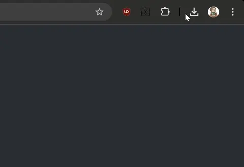
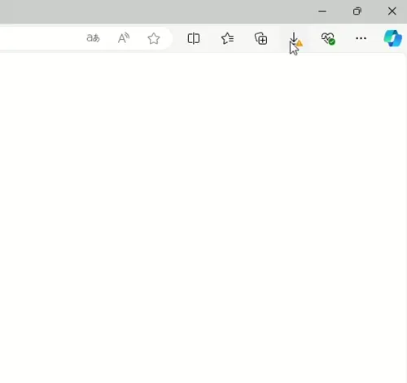
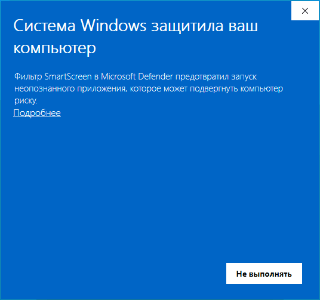
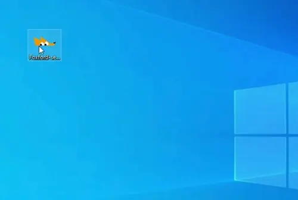
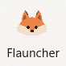

Установка на Windows 💻
Всего 3 простых шага.
Важно
Отключи антивирус
Перед началом установки лучше отключить сторонние антивирусы. Они часто путают новые лаунчеры с вирусами.
Шаг 1
Запусти скачанный файл
Ты скачал файл (обычно он в папке "Загрузки"). Просто открой его двойным кликом.


Если вылезла ошибка
Синее окно защиты?
Если Windows пишет "Система защитила ваш компьютер" — не пугайся. Это нормально.
👉 Нажми "Подробнее", а потом кнопку "Выполнить в любом случае".

Шаг 2
Нажимай "Далее"
Откроется мастер установки. Просто следуй инструкциям на экране и дождись загрузки.

Готово!
Запускай игру
На рабочем столе появится ярлык Flauncher. Запускай его!

🎥 Видео-инструкция